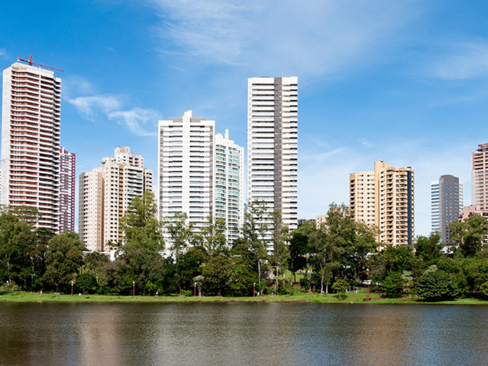

O estado do Paraná, localizado na região Sul do Brasil e com a cidade de Curitiba como capital, é uma unidade federativa de destaque nacional, conhecida por sua economia forte, baseada na produção agrícola de grãos como soja e milho, além de um setor industrial e de serviços robusto. Com uma geografia diversificada que inclui planaltos, clima subtropical e as famosas Cataratas do Iguaçu, o estado é um importante polo turístico e econômico, dividindo fronteiras com Paraguai e Argentina, o que favorece a integração logística e o comércio exterior. Sua história é marcada pela forte imigração europeia e pelo desmembramento da província de São Paulo em 1853, resultando em uma cultura rica e diversificada.
